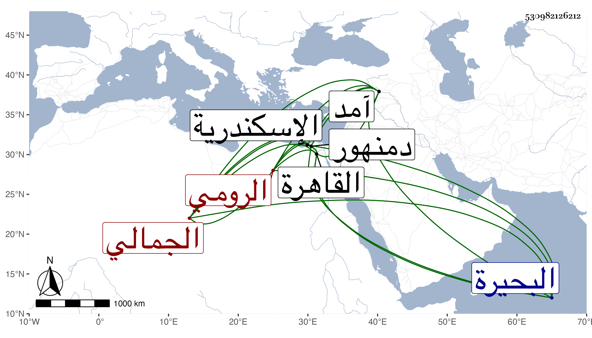

0902Sakhawi.DawLamic.ITO20230111-ara1.EIS1600.530982126212
Biography ID: 530982126212
1013
أقبغا الجمالي كمشبغا علاء الدين الرومي أحد أمراء الطبلخاناه بالقاهرة عمل كشف الوجه القبلي وغيره بل ولي الاستادارية بالسعي بالمال فلم ينتج أمره وساءت سيرته فعزل وضرب بالمقارع ثم وليها ظنا مرة أخرى وعزل أقبح من الأول ثم أنعم عليه الأشرف وهو معه في آمد بأمرة عشرة ثم عاد فعمل كشف الوجه البحري وتوجه إلى دمنهور فلم تطل أيامه وقتل في معركة مع العربان في ربيع الآخر سنة سبع وثلاثين ، وكان كريها مبغضا أهوج ، وقال شيخنا في أنبائه : إنه ولي الاستادارية الكبرى غير مرة وفي الآخر ولاه السلطان كشف البحيرة فتوجه إى ل هناك فأغار على بعض العرب فتجمعوا عليه وقتلوه وخرج الوزير الاستادار كريم الدين بن كاتب المناخات بعسكر فجمع العرب وأمنهم وأحضرهم إلى السلطان وذهب دمه هدرا ، وكان أهوج مقداما غشوما ، وأرخ العيني قتله بالقرب من مريوط من حوالي الاسكندرية في العشر الأخير من جمادى الأولى .
